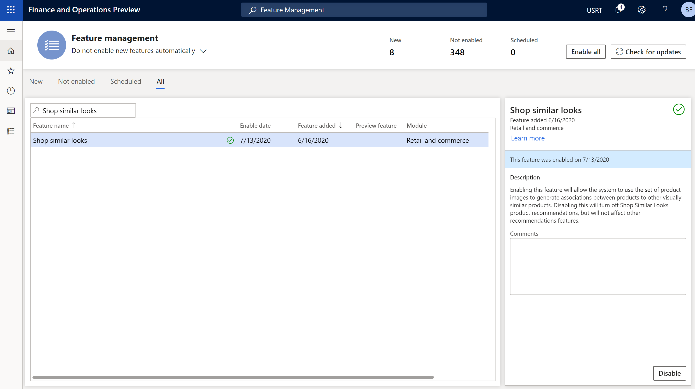
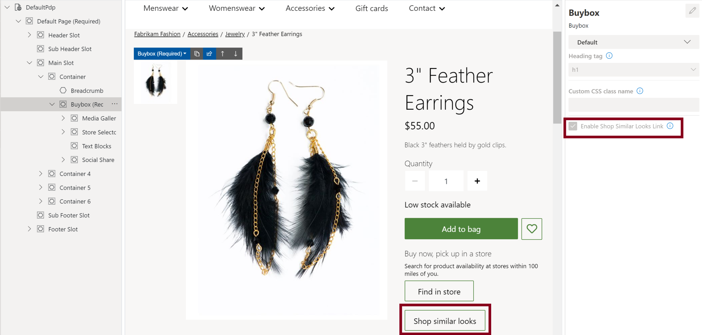

Die Empfehlungen „Produkte mit ähnlichem Aussehen kaufen“ aktivieren
Important
Dynamics 365 Retail ist jetzt Dynamics 365 Commerce und bietet umfassende Handelsfunktionen für alle Kanäle – von E-Commerce über Shops bis hin zu Callcentern. Weitere Informationen zu diesen Änderungen finden Sie unter Microsoft Dynamics 365 Commerce.
In diesem Thema wird beschrieben, wie Sie Produktempfehlungen „Produkte mit ähnlichem Aussehen kaufen“ in Microsoft Dynamics 365 Commerce aktivieren.
Übersicht
Die Empfehlungen „Produkte mit ähnlichem Aussehen kaufen“ in Dynamics 365 Commerce nutzt die Kraft der künstlichen Intelligenz und des maschinellen Lernens (AI-ML), um Kunden Empfehlungen für visuell ähnliche Produkte zu geben. Durch die Bereitstellung von Empfehlungen für „Produkte mit ähnlichem Aussehen kaufen“ für alle Einzelhandelskanäle in Commerce können Einzelhändler die Kundenzufriedenheit steigern, indem sie Kunden dabei helfen, leicht zu finden, wonach sie suchen.
Die Funktionalität für Empfehlungen zum „Produkte mit ähnlichem Aussehen kaufen“ verwendet Produktbilder von Startproduktvarianten, um visuell ähnliche Produkte im Produktkatalog eines Einzelhändlers zu finden und zu empfehlen.
Empfehlungen für „Produkte mit ähnlichem Aussehen kaufen“ sind sowohl in POS‑ als auch in E-Commerce-Bereichen verfügbar.
Beispielszenarien
- Ein Kunde sieht sich einen schwarz gestreiften Pullover an und erhält eine Empfehlung für einen ähnlichen Pullover in Rot. Der Kunde wählt das empfohlene Produkt anstelle des ursprünglich angezeigten Produkts aus und erhält dann Empfehlungen für ähnliche Produkte in Rot.
- Ein Kunde verwendet Empfehlungen für „Produkte mit ähnlichem Aussehen kaufen“, um passende Ohrringe für einen Ring zu finden, den der Kunde kaufen möchte.
In der Commerce-Zentrale die Empfehlung „Produkte mit ähnlichem Aussehen kaufen“ aktivieren
Produktempfehlungen werden nur für Commerce-Kunden unterstützt, die ihren Speicher zu Azure Data Lake Gen2 migriert haben.
Voraussetzungen
Bevor Einzelhändler ihren Kunden Empfehlungen für „Produkte mit ähnlichem Aussehen kaufen“ zeigen können, sind zwei Schritte erforderlich:
- Produktempfehlungen aktivieren in der Commerce-Zentrale.
- Stellen Sie sicher, dass der Medienserver HTTPS-Aufrufe unterstützt.
Damit das Empfehlungsmodul auf die Produktbilder zugreifen kann, müssen Einzelhändler die Produkt-URLs generieren. Folgen Sie diesen Schritten, um Produkt-URLs in der Commerce-Zentrale zu verarbeiten.
- Wechseln Sie zu Produktbilder.
- Wählen Sie im Aktivitätsbereich Medienvorlage definieren aus.
- Wählen Sie im Eigenschaftenbereich Medienvorlage definieren unter Medien-URLs die Option URLs generieren aus.
Note
Wenn Sie die Empfehlungsfunktion „Produkte mit ähnlichem Aussehen kaufen“ aktivieren, beginnt der Prozess zum Generieren von Produktempfehlungslisten. Es kann bis zu einem Tag dauern, bis diese Listen online und an den POS-Terminals verfügbar und sichtbar sind.
Führen Sie die folgenden Schritte aus, um die Empfehlungsfunktion „Produkte mit ähnlichem Aussehen kaufen“ in der Commerce-Zentrale zu aktivieren.
- Navigieren Sie zu Funktionsverwaltung.
- Suchen Sie in der Liste der verfügbaren Funktionen Produkte mit ähnlichem Aussehen kaufen und wählen Sie es aus.
- Wählen Sie im rechten Bereich aus Aktivieren aus, um den Dienst einzuschalten.
Die folgende Abbildung zeigt die Funktion Produkte mit ähnlichem Aussehen kaufen auf der Seite Funktionsverwaltung in der Commerce-Zentrale.

Nach Abschluss der vorhergehenden Aufgaben werden POS-Terminals automatisch um kontextabhängigen Bereich Produkte mit ähnlichem Aussehen kaufen erweitert. Durch die Auswahl Weitere Details können Benutzer von POS-Terminals zu einer speziellen Seite „Produkte mit ähnlichem Aussehen kaufen“ weitergeleitet werden, auf der weitere Filter angewendet werden können.
Note
Wenn Sie die Empfehlungsfunktion „Produkte mit ähnlichem Aussehen kaufen“ deaktivieren, sind keine anderen Arten von Produktempfehlungen betroffen. Weitere Informationen zu Produktempfehlungen finden Sie unter Überblick über Produktempfehlungen.
Mithilfe des Commerce Site Builder eine Schaltfläche mit ähnlichem Aussehen zu den Produktdetailseiten hinzufügen
Nachdem Sie die Empfehlungsfunktion „Produkte mit ähnlichem Aussehen kaufen“ in der Commerce-Zentrale aktiviert haben, können Einzelhändler mit einer Option im Commerce Site Builder eine Schaltfläche Produkte mit ähnlichem Aussehen kaufen auf einer beliebigen Produktdetailseite (PDP) zum Kauffeld hinzufügen. Ein Kunde, der diese Schaltfläche auswählt, wird zu einer speziellen Seite „Produkte mit ähnlichem Aussehen kaufen“ weitergeleitet, auf der visuell ähnliche Produkte angezeigt werden. Dort kann der Kunde Auswahlen verwenden, um die Produkte weiter zu filtern.
Gehen Sie folgendermaßen vor, um eine Schaltfläche Produkte mit ähnlichem Aussehen kaufen zu einem PDP mithilfe des Commerce Site Builder hinzuzufügen.
- Öffnen Sie eine vorhandene Site Builder-Seite, die ein Kauffeld enthält.
- Wählen Sie im linken Navigationsbereich das Kauffeld aus.
- Wählen Sie im rechten Navigationsbereich das Kontrollkästchen Link für „Produkte mit ähnlichem Aussehen kaufen“ aktivieren aus.
- Wählen Sie Speichern, wählen Sie Bearbeiten beenden, um die Seite einzuchecken, und wählen Sie dann Veröffentlichen, um es zu veröffentlichen. Nach der Veröffentlichung der Seite enthält die PDP eine Schaltfläche Produkte mit ähnlichem Aussehen kaufen.
Die folgende Abbildung zeigt das Kontrollkästchen Links für „Produkte mit ähnlichem Aussehen kaufen“ aktivieren und die Schaltfläche Produkte mit ähnlichem Aussehen kaufen auf einer Beispiel-PDP im Site Builder.

Zusätzliche Ressourcen
Überblick über Produktempfehlungen
Aktivieren von Azure Data Lake Storage in einer Dynamics 365 Commerce Umgebung
Produktempfehlungen aktivieren
Personalisierte Empfehlungen kündigen
Produktempfehlungen am POS hinzufügen
Empfehlungen zum Transaktionsbildschirm hinzufügen
Anpassung der Ergebnisse der AI-ML-Empfehlungen
Manuell kuratierte Empfehlungen erstellen